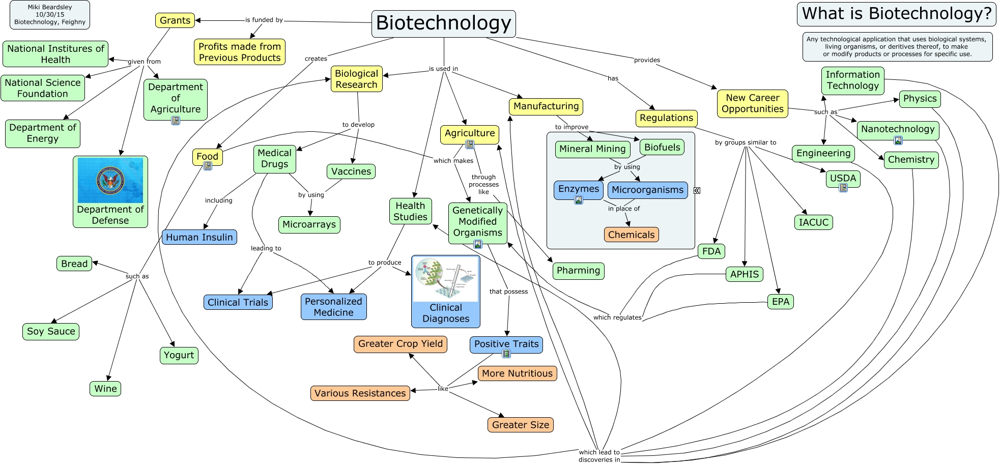

WARNING:
JavaScript is turned OFF. None of the links on this concept map will
work until it is reactivated.
If you need help turning JavaScript On, click here.
This Concept Map, created with IHMC CmapTools, has information related to: Biotechnology, Biotechnology has Regulations, Engineering which lead to discoveries in Agriculture, Positive Traits like More Nutritious, Physics which lead to discoveries in Manufacturing, Food such as Yogurt, Food such as Wine, Engineering which lead to discoveries in Health Studies, Health Studies to produce Clinical Trials, Agriculture which makes Genetically Modified Organisms, Food which makes Genetically Modified Organisms, Nanotechnology which lead to discoveries in Agriculture, Biological Research to develop Medical Drugs, EPA which regulates Genetically Modified Organisms, Grants given from National Institures of Health, New Career Opportunities such as Information Technology, Food such as Bread, Medical Drugs including Human Insulin, New Career Opportunities such as Chemistry, Biotechnology is funded by Grants, Regulations by groups similar to IACUC
